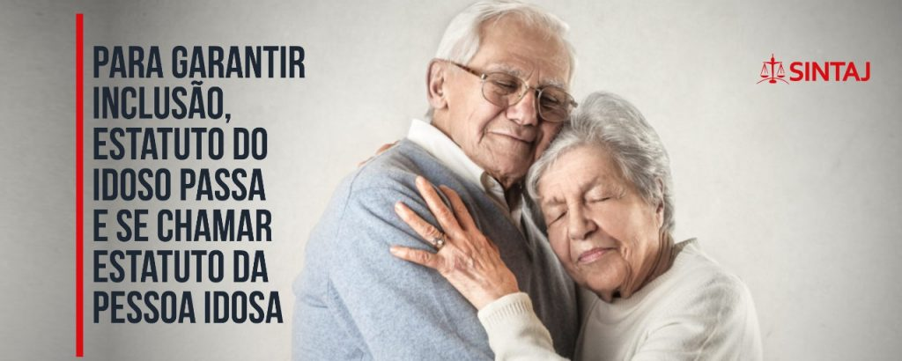

As instituições desempenham um papel crucial na proteção dos idosos contra a violência. Essas instituições
podem ser governamentais, organizações não governamentais, órgãos de saúde e assistência social, entre outros.
Ao reconhecer e abordar a violência contra o idoso como uma questão prioritária, essas instituições podem
desempenhar um papel ativo na prevenção, identificação e resposta a casos de abuso e negligência.
Uma das principais responsabilidades das instituições é desenvolver políticas e legislação que garantam a
proteção dos direitos dos idosos. Isso inclui a criação e implementação de leis específicas que criminalizem a
violência contra o idoso, bem como a definição de diretrizes para a assistência, cuidado e tratamento adequados.
Essas políticas devem ser amplamente divulgadas e atualizadas regularmente, para garantir que estejam alinhadas
com as necessidades e os avanços na compreensão da violência contra o idoso.
Além da criação de políticas, as instituições têm a responsabilidade de oferecer serviços e recursos adequados
para os idosos em situação de vulnerabilidade. Isso inclui o estabelecimento de abrigos seguros e acolhedores,
onde os idosos possam receber apoio e proteção imediata. Esses abrigos devem ser equipados com profissionais
treinados e qualificados, que possam fornecer cuidados médicos, emocionais e legais aos idosos em situação de
abuso.
Outro aspecto importante é a criação de linhas diretas de denúncia e assistência. As instituições devem
disponibilizar canais de comunicação confidenciais, onde os idosos ou qualquer pessoa que suspeite de violência
contra o idoso possa relatar os casos e buscar ajuda. Essas linhas diretas devem estar disponíveis 24 horas por
dia, 7 dias por semana, e serem acessíveis a todos, incluindo aqueles com deficiências físicas ou cognitivas.
As instituições também devem investir na capacitação e treinamento de profissionais que trabalham diretamente
com idosos, como médicos, assistentes sociais, enfermeiros, policiais e advogados. Essa formação deve incluir a
identificação de sinais de violência, abuso ou negligência, bem como o conhecimento dos procedimentos adequados
de intervenção e encaminhamento. A sensibilização e a compreensão sobre os direitos dos idosos também devem ser
enfatizadas durante esses programas de capacitação.
Além disso, as instituições devem promover parcerias e colaborações com outras organizações e agências
relevantes, como serviços de saúde, forças policiais, organizações de direitos humanos e grupos comunitários.
Essas parcerias podem fortalecer as respostas integradas e multidisciplinares à violência contra o idoso,
compartilhando recursos, conhecimentos e melhores práticas.
Por fim, a conscientização e a promoção da cultura de respeito e cuidado pelos idosos devem ser uma prioridade
para as instituições. Isso pode ser alcançado por meio de campanhas de conscientização pública, eventos
comunitários e programas de educação. As instituições podem desempenhar um papel ativo na organização e execução
dessas iniciativas, buscando envolver a comunidade de forma ampla.
Campanhas de conscientização pública podem utilizar diversos canais de comunicação, como mídias tradicionais,
redes sociais, cartazes e panfletos informativos. Essas campanhas devem fornecer informações claras sobre os
diferentes tipos de violência contra o idoso, seus sinais de alerta e os recursos disponíveis para denúncia e
apoio. Também é importante destacar a importância do respeito pelos idosos e da promoção de uma cultura
inclusiva, que valorize suas contribuições e experiências de vida.
Eventos comunitários podem envolver palestras, seminários, workshops e atividades interativas que abordem
questões relacionadas à violência contra o idoso. Esses eventos podem ser realizados em locais acessíveis, como
centros comunitários, escolas, igrejas ou espaços públicos, para que o maior número possível de pessoas possa
participar. Além disso, é importante incluir a participação ativa dos idosos, permitindo que compartilhem suas
experiências, desafios e perspectivas, fortalecendo assim a conscientização e a empatia da comunidade.
Os programas de educação são fundamentais para fornecer informações e conhecimentos sobre os direitos dos
idosos, os sinais de abuso e negligência, e as medidas de prevenção e intervenção. Esses programas podem ser
direcionados a diferentes grupos, como profissionais de saúde, cuidadores, estudantes, famílias e comunidades em
geral. É importante adaptar a linguagem e o formato dos programas de acordo com o público-alvo, garantindo a
compreensão e a adesão das informações transmitidas.
As instituições também podem promover parcerias com organizações comunitárias e grupos locais para fortalecer a
conscientização e o apoio aos idosos. Por exemplo, parcerias com grupos de voluntários podem permitir a
implementação de programas de visitas regulares a idosos que vivem sozinhos ou em situação de isolamento social.
Essas visitas não apenas fornecem companhia e apoio emocional, mas também podem identificar sinais de abuso ou
negligência, permitindo a intervenção adequada.
Por fim, as instituições devem incentivar a participação ativa da sociedade, incentivando a denúncia de casos de
violência contra o idoso. É fundamental fornecer canais seguros e confidenciais para relatar os casos,
garantindo que os denunciantes sejam protegidos de qualquer forma de retaliação. A denúncia é um passo crucial
para a identificação e intervenção nos casos de violência, permitindo que os idosos recebam a assistência e a
proteção necessárias.

Uma importante referência no contexto da proteção dos direitos dos idosos é o Estatuto do Idoso, uma lei
brasileira criada em 2003 com o objetivo de garantir os direitos fundamentais dessa parcela da população e
combater a discriminação e a violência contra o idoso.
O Estatuto do Idoso é um marco legal que estabelece diretrizes e normas para a promoção e proteção dos direitos
dos idosos. Ele aborda diversos aspectos relacionados à vida dos idosos, como saúde, educação, trabalho,
transporte, lazer, cultura, moradia, acesso à justiça, entre outros.